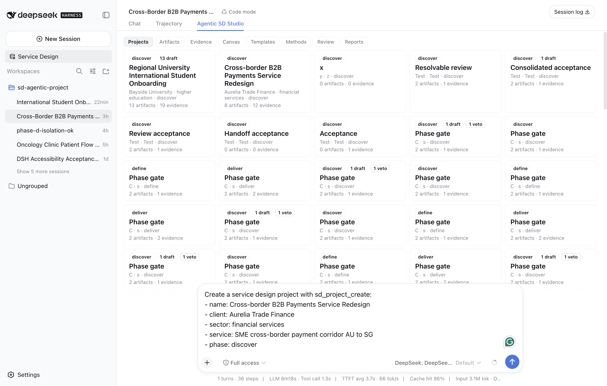
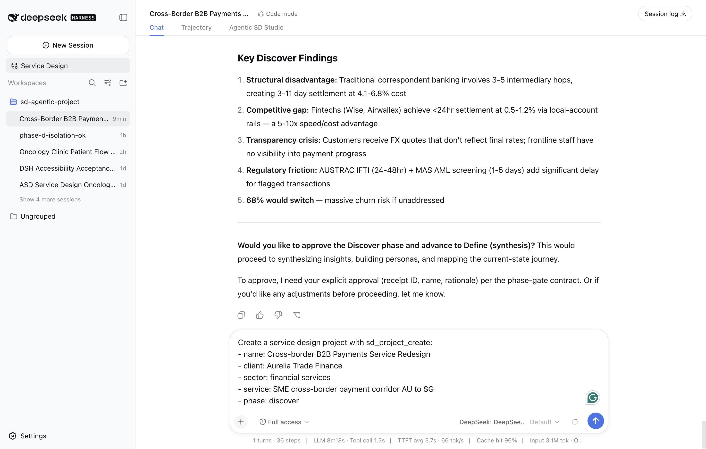
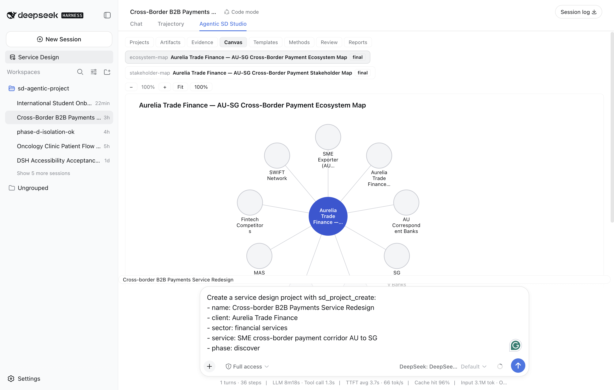
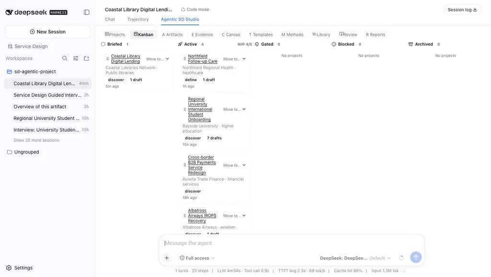
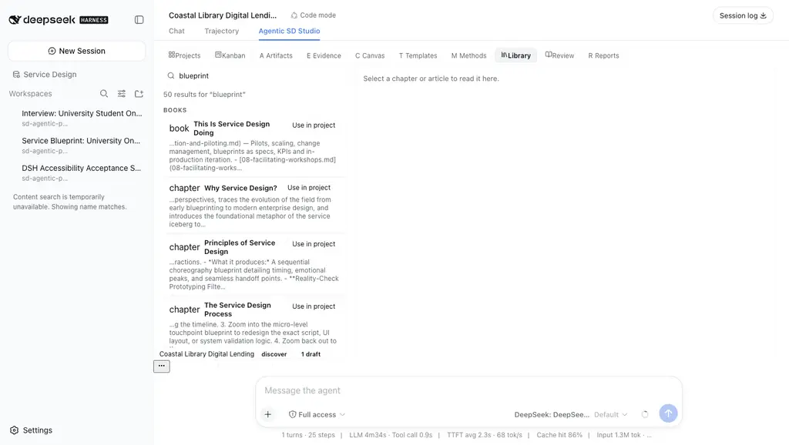
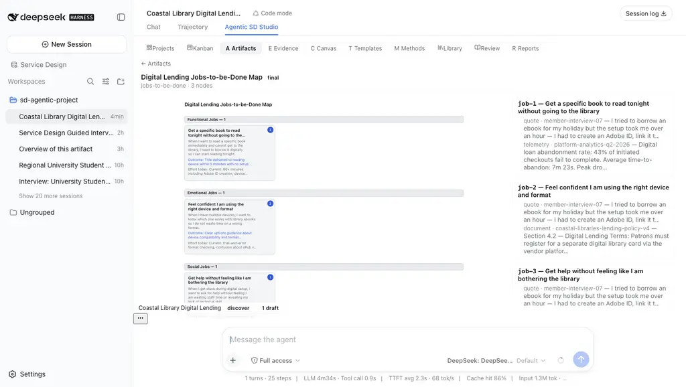

Confidentiality & provenance note
Aurelia Trade Finance, Meridian Oncology Partners, and Bayside University are fictional composite clients. Every quote, telemetry figure, stakeholder, and comparator named in the artifacts below was authored for the engagement; no real company, patient, or payment corridor is represented.
The tool runs are real. Three receipts from 2026-08-22 are the evidence base, and nothing in this article claims behavior they do not record:
docs/receipts/ego-check/2026-08-22-ego-browser-integration-check.md— a live Discover-phase run for the payments project, driven by ego-browser against a disposable DSH profile, ending at an un-advanced human gate.docs/receipts/2026-08-22-phase-c-live-acceptance.md— the oncology project's live acceptance: persisted artifact and evidence counts, a refusal, a critic cycle, the human gate, canvas metadata, reload and isolation checks.docs/receipts/2026-08-22-ui-placement-fix.md— the placement failure and the fix that moved the Studio from the sidebar into the center column.docs/receipts/2026-08-23-studio-v2-live-verification.md— the studio v2 pass: a fresh disposable profile running the v2 build through a real turn that exercised the Kanban board, the Library, the canvas workspace, the composer context chip, and the two new artifact kinds.
The model behind every turn described here was DeepSeek V4 Flash via OpenRouter,
configured in the disposable profiles. The host was DeepSeek Harness 0.1.0-rc.5
running the official CLI server; the Studio was the local @asd/ui 0.5.0 tarball,
installed with file: — the public-registry path is still blocked, and §11 says so
plainly. This article is a draft: publication is the owner's call.
Executive summary
Article 36 verified that the ASD Studio installs into the DeepSeek Harness. It also left a problem on the table: the Studio, a full service-design workbench, was living in a roughly 320-pixel sidebar activity panel while the center column showed a hero screen. This article covers what happened next — the placement redesign that moved the Studio into the host-native center tab, and the first two live service-design journeys run across that surface end to end.
The outcome, in one line: a practitioner can now type a client brief into the Studio's own form, have it drafted as a tool instruction into the live composer, watch a real model turn execute the service-design workflow with visible tool calls, and hold the phase gate themselves — with artifacts, evidence, canvas links, and review records persisting exactly once across reloads and server restarts.
| Clients | Aurelia Trade Finance (AU to SG SME payments corridor); Meridian Oncology Partners (outpatient chemotherapy pathway) — fictional composites |
| Sector | Cross-border fintech; oncology care |
| Scope | Brief to Discover-phase artifacts, critic gate, human phase gate — inside the DSH shell |
| Duration | One working day of live runs (2026-08-22) |
| Team | 1 service designer + DSH profile (asd-ego-check, asd-phase-c-live) + @asd/ui 0.5.0 |
| Headline results | One 8m19s, 36-step Discover turn producing 4 critic-passed artifacts; a second project persisted at 26 artifacts and 15 evidence records with exact-match reload; 3 refusals surfaced, 0 swallowed; the human gate never auto-advanced |
What you will learn:
- How the host-native
conversation.viewseam changed the working posture — and why the sidebar panel is now the fallback surface, not the studio. - What each boundary actually stops: the closed kind schema, the evidence store, the critic, and the human phase gate.
- Where the honest install boundary sits today, and what the canvas does and does not store.
The brief
Aurelia Trade Finance is a mid-size cross-border payments provider serving small and medium exporters on the Australia-to-Singapore corridor. Its presenting problem: onboarding and first-payment friction that clients experience as silence — compliance holds nobody explains, settlement ETAs nobody updates. The Discover phase needed comparator intelligence (Wise, Airwallex, OFX), a stakeholder map, and an ecosystem map of the corridor's actors.
Meridian Oncology Partners runs outpatient chemotherapy across three clinics. Its presenting problem: the infusion day runs late, patients are not told, and chair utilization data says nothing about waiting experience. This project was the live acceptance surface — every persisted record was counted, refused, vetoed, remediated, reloaded, and re-counted.
The meta-brief, though, is the tool itself. After article 36's install verification, the owner opened the Studio and confirmed the failure with one screenshot: the workbench crammed into the sidebar. The brief for this article was therefore twofold — fix the placement properly, on the host's own terms, and then run real engagements across the fixed surface and keep the receipts.
Success criteria, agreed before the runs:
- A real model turn, not a scripted demo — visible tool calls, real tokens.
- Artifacts and evidence persisted to disk, surviving reload and server restart.
- Every gate holds: schema, evidence references, critic, human phase gate.
- Screenshots as proof of surface, not as decoration.
Approach: the AI-first service design process
The integration follows one ownership rule: the host owns the session, the model
configuration, and the layout; ASD registers slots. The Studio package registers
two surfaces over one shared store: a sidebar activity (Service Design) and a
conversation.view entry — the Agentic SD Studio tab that rc.5 renders as a
top tab in the center column, beside Chat and Trajectory, with the composer
resident below it. This is the community-plugin pattern: an additive tab, mounted
through the seam the host reserves for primary content, rather than a fight over
the host's layout.
The workflow itself is unchanged from article 36: methods are manifests, the model
executes them through the sd_* tool surface, artifact writes pass through
acceptance rules on the sd_artifact_write path, and the deterministic layer
(sd_factcheck) replays the evidence chain without the model.
The execution map for the two journeys, by platform role:
| Phase | Method / action | Roles on the path | Artifact produced | Gate |
|---|---|---|---|---|
| Scaffold | project lifecycle | orchestrator · librarian | project.json · evidence register | content-addressed evidence |
| Research | stakeholder-mapping · research plan (books 04/06, 01/04) | researcher · librarian | stakeholder-map (9 nodes) · research-plan | min evidence per node |
| Synthesis | insight extraction · ecosystem-value-mapping (book 01/04) | synthesizer · mapper | insight-set (5 comparator insights) · ecosystem-map (9 actors) | closed kind schema |
| Define | journey-from-transcripts (book 09/04) | synthesizer · mapper | journey-map | refs resolve |
| Develop | ideation and prototyping methods | ideator · prototyper | HMW sets · concept briefs · storyboards | acceptance rules |
| Deliver | evidence-gated-blueprint · KPI tree (books 09/05, 19/07) | mapper · measurer | service-blueprint · kpi-tree | critic verdict on write path |
| Readout | traceability report | presenter · measurer | traceability-matrix HTML | sd_factcheck replay |
One deviation from the series template: the appendix sits at §14, after the deterministic fact-check at §13, so the receipts and screenshot index can close the article. Everything else follows the contract.
The practitioner journey
4.1 A brief becomes a tool call
The Studio's create-project form — name, client, sector, service, phase — has one
submit affordance, and it does not call a backend. It drafts the
sd_project_create instruction into the live DSH composer. The Studio and the
conversation are one environment; there is no export, no copy-paste, no second
tool. The designer fills the form, the instruction appears in the composer, the
designer reads it, edits it if needed, and sends it.
This is the posture the center tab makes possible: the workbench occupies the full center column — projects grid, artifact and evidence tabs, canvas — while the composer stays resident underneath, so the move from looking at the work to instructing the model is a shift of the eyes, not a change of window.

4.2 The model runs the workflow
Sending the drafted instruction started a real model turn. The receipt's numbers, verbatim: 8 minutes 19 seconds, 36 steps, 96% cache hit, 3.1M input and 24K output tokens, DeepSeek V4 Flash configured in the disposable profile. During the turn the model created the project, captured the evidence register, and wrote the Discover-phase artifacts — research plan, comparator insight set, stakeholder map, ecosystem map — each through the gated write path.
Two shell-level behaviors mattered to the practitioner. The session auto-renamed itself to "Cross-Border B2B Payments Redesign", making the session-to-project binding durable and visible in the sidebar; and every tool call rendered inline in the conversation, so the 36 steps were inspectable as they ran, not reconstructed afterward.
4.3 The schema says no — in the open
Mid-turn, the model attempted an ecosystem map whose nodes carried value and
direction fields. The engine's closed kind schema rejected the write with
precise per-field errors — those fields are not part of the ecosystem-map
contract. The model read the errors and adapted in the same turn, delivering
compliant artifacts. The failure was surfaced in the conversation, not swallowed
into a retry loop.
The oncology run produced the evidence-side version of the same boundary.
Prompted — deliberately, as a probe — to write an artifact citing
ev-fabricated-0000-deadbeef, the write came back as a ToolCallError:
node "n1" cites evidence "ev-fabricated-0000-deadbeef" which is not in the
project evidence store. The model then added real evidence, asked how to proceed,
and rewrote the artifact against the real content-addressed id. The result —
Wait-time communication insight, an insight-set — persisted as a draft, which
is exactly what an unreviewed artifact should be.
4.4 The critic cycle, on the same artifact id
The oncology journey map went through the full critic loop, and the loop is the audit trail:
The veto did not spawn a new artifact; remediation happened in place, on the
same artifact id, and the verdict flipped to pass. The accumulated review record
— a review-veto-log artifact linked to its target by reviewOf — persisted as a
final artifact in its own right. The audit trail is part of the deliverable.
4.5 The gate report, and the gate that waits
The payments turn ended where it should: at the human. The session's closing message was a Discover-phase gate report — the artifact table (4 artifacts, all critic-passed), the evidence register (12 rows: 6 quotes, 4 telemetry, 2 document extracts, from 4 sources), the findings — and then the contract sentence: "To approve, I need your explicit approval (receipt ID, name, rationale) per the phase-gate contract." The gate was not advanced.

The oncology run probed the gate from the other side. An approval was attempted
with an empty approvedBy; the gate rejected it —
approvalReceipt.approvedBy must be a non-empty string — and recorded the
rejection as a gate audit. The Studio's gate panel at close read: factcheck
passing, phase discover, 1 final, 24 draft, 0 veto — automatic advance
blocked without explicit human approval. The gate holds even against its own
operator.
4.6 The canvas is a pointer, not a warehouse
Two external canvases were linked to the oncology project — a Figma file
(Infusion Tracker SMS — wireframes v2) and a Penpot board (Chair Control Tower
— board mockups). What persisted, in canvases.json, is metadata only: id,
projectId, tool, label, url, addedAt. No frames, no sync, no mirror.
The Studio renders these as provider-classified previews with an Open externally action and an embed-fallback note. Native artifact canvases are the other half: the canvas viewer renders the artifact's own SVG — here, an ecosystem map — at the full width of the center column, in a viewport measured at capture as 1134 by 576 CSS pixels, with fit and zoom controls.

The design position is deliberate: the Studio is the system of record for evidence and artifacts, and a system of reference for canvases. Figma owns the frames; the project owns the link and the label.
4.7 Reload is the demo
Persistence claims were tested, not asserted. Pre-reload counts for the oncology
project: 26 artifacts, 15 evidence records, 26 review rows, 2 canvases. After a
full browser reload, the dashboard showed exactly one project card — 26 artifacts,
15 evidence — and post-reload RPC counts matched pre-reload exactly
(exactMatch: true). The official server was then restarted; the same
project, evidence, artifacts, review log, and canvases reloaded from disk
unchanged. A fresh New Session showed no transcript leakage from the live
exercise. And the invalid-input probes — a dangling evidence reference, an unknown
method id, a malformed nodes argument — were all rejected with the project counts
untouched.
Artifacts portfolio
Everything below persisted as typed JSON on disk under the project workspace, one file per artifact, content-addressed evidence in a single register.
| # | Artifact | Project | Kind | Scale | Status at close |
|---|---|---|---|---|---|
| A1 | Research plan | Aurelia | research-plan | — | critic-passed |
| A2 | Corridor comparator insights | Aurelia | insight-set | 5 insights (incl. Wise, Airwallex, OFX) | critic-passed |
| A3 | Corridor stakeholder map | Aurelia | stakeholder-map | 9 stakeholders | critic-passed |
| A4 | Corridor ecosystem map | Aurelia | ecosystem-map | 9 actors, value flows | critic-passed |
| A5 | Evidence register | Aurelia | — | 12 rows (6 quote, 4 telemetry, 2 document) from 4 sources | — |
| A6 | Oncology artifact set | Meridian | six template kinds | 25 design artifacts | 1 final, 24 draft |
| A7 | Review: Current-State Infusion Day Journey | Meridian | review-veto-log | 5 accumulated rows | final |
| A8 | Evidence register | Meridian | — | 15 records (7 quote, 5 telemetry, 3 document) | — |
| A9 | Traceability matrix report | Meridian | report | 126 table rows, 125 embedded evidence hashes | exported |
The oncology set covers all six shipped template kinds — ecosystem-map, insight-set, journey-map, persona-set, service-blueprint, stakeholder-map — and all four SD phases when the Studio's method phases are mapped to the Double Diamond: Discover (research), Define (synthesis), Develop (ideation and prototyping), Deliver (delivery and measurement).
The corridor map, condensed from A4 — the hub-and-spoke the schema first rejected and then accepted once the nodes carried only contracted fields:
Use cases
Use case 1 — Comparator intelligence as a Discover artifact. The corridor insight set holds five comparator insights, including Wise, Airwallex, and OFX, each written against evidence rows rather than the model's memory. The value is not the insight; it is that a stakeholder can open the insight, open the evidence it cites, and check the chain. Competitive claims in a Discover readout usually float; these are anchored.
Use case 2 — The refusal that became the finding. The probe with the fabricated evidence id produced the run's most instructive artifact: after the refusal, the model added the real wait-time evidence and rewrote the insight against it. Wait-time communication insight persisted as a draft — unreviewed, visible on the review board, carrying its provenance. A tool that silently "fixed" the citation would have produced a cleaner transcript and a worse system.
Use case 3 — The traceability matrix as the client readout. The exported report is a 48,102-byte HTML table: 126 rows, 125 of them carrying an embedded 64-hex evidence hash. Every claim in the readout points at a record. For a fictional oncology client the numbers are illustrative; for a real engagement this is the difference between a presentation and an audit.
SOPs for AI
The SOP encoding pattern is unchanged from articles 29 and 36 — method manifests with provenance, inputs, steps by role, output schema, machine-checkable acceptance rules, and a review gate. What these two journeys added is evidence about the failure modes, which is where an SOP earns its keep:
- Closed kind schemas are executable contracts. The ecosystem-map rejection
listed the exact fields (
value,direction) that the kind does not admit. The model self-corrected in-turn because the error was specific. A vague 400 would have produced a retry loop; a permissive schema would have produced a corrupt map. - The evidence store is referential, not suggestible. Citation of a non-existent record is a ToolCallError with the dangling id named. There is no path by which an artifact can reference evidence that was never captured.
- Remediation is same-id. The critic's veto does not fork the artifact; the rewrite lands on the same id and the verdict history accumulates in the veto log. Review is a property of the artifact, not an event in a chat log.
- The phase gate is a human contract. Receipt id, name, rationale — and an empty name is rejected and audited. The platform records artifacts, evidence, verdicts, and gate audits; the human decides.
Guardrails held across both runs: no unevidenced node reached a final artifact, no phase advanced without explicit approval, and every rejected write persisted as a draft with its failures attached — an auditable "no", never a silent one.
Value creation & measurement
As with article 36, this article reports no business outcome. The clients are fictional; a fabricated "onboarding drop-off fell 22%" would be the precise failure the gated write path exists to prevent. What is measured is the process, from the receipts:
| Measure | Observed |
|---|---|
| Discover turn (Aurelia) | 8m19s, 36 steps, 96% cache hit, 3.1M in / 24K out tokens |
| Artifacts produced (Aurelia) | 4, all critic-passed |
| Evidence rows (Aurelia) | 12 from 4 sources |
| Artifacts persisted (Meridian) | 26 — 25 design artifacts plus 1 review-veto-log |
| Evidence records (Meridian) | 15 |
| Journey checkpoints captured (Meridian) | 29, each with a screenshot and a proof statement |
| Refusals surfaced | 3 — closed schema, dangling evidence id, empty gate approval |
| Critic veto cycles | 1 — veto, same-id remediation, pass, final |
| Reload count mismatch | 0 (exact match after reload and after server restart) |
| Unevidenced nodes in final artifacts | 0 |
| Phases advanced without human approval | 0 |
The Service Profit Chain logic (book 20) stops one link early here, deliberately: the operational and process metrics are real; the experience and business links would be fiction for a composite client, so the chain is drawn and left open.
Design learnings: from sidebar cramp to the center tab
This section is the placement story, kept separate because it is the article's most transferable lesson.
The failure. The Studio was registered correctly as a conversation.view
entry — id asd-studio, order 20 — but the entry point used by the composer dock
chip only ever called layout.openActivity(...). So the only surface ever
activated was the sidebar activity panel, and the full workbench — projects grid,
evidence register, review board, canvas — rendered inside roughly 320 pixels while
the center column idled on the hero. The owner confirmed it with one screenshot:
The pattern. Host applications of this class reserve the center column for primary content and expose it through a view registry — Chat, Trajectory, and whatever a plugin adds. The community-plugin pattern is an additive tab: register the view, activate it by name through the scoped conversation service, and leave the host's layout alone. The sidebar activity is the compact surface — right for a launcher or a summary, wrong for a workbench.
The fix. openProjectsSection() now resolves the current session, resolves
its scope, and calls scoped conversation.showView('asd-studio'). On success the
sidebar activity is docked with layout.closeActivity() so the center tab is the
visible surface. Any failure — no current session, an unscoped session, a missing
seam, or showView throwing because the conversation body is not mounted on a
blank session — falls back to the sidebar activity. The Studio's root element
became a full-width center-column citizen, and the canvas viewport moved from a
fixed 420-pixel height to min(62vh, 640px) with a 320-pixel floor; fit()
measures the container, so width follows the parent.
The fallback is a feature, not a residue. On a blank session — the hero state — there is no conversation body to host the tab, so the sidebar panel remains the surface, by design:


Verification. The placement change shipped with the test suite rewritten to
match intent rather than habit: the old layout spec had asserted the sidebar-only
placement — it enshrined the cramp. The rewritten spec asserts the center-tab
full-width contract, the responsive canvas viewport, and the retained sidebar
containment as fallback; four new open-behavior tests cover the showView path and
all three fallback paths. pnpm -r test: 714 passed, 0 failed across the
eight packages — 133 of them in the UI package.
The lesson generalizes: when a plugin's surface feels broken, check activation before composition. Registration is declarative and easy to verify; the call that activates the surface is imperative and easy to miss. The Studio was never mis-registered — it was never asked to appear.
AI tool playbook
| Component | Role on this engagement |
|---|---|
| DeepSeek Harness 0.1.0-rc.5 | The host: sessions, model configuration, layout, the conversation.view seam. Official CLI server on 127.0.0.1. |
@asd/ui 0.5.0 |
The Studio package, installed from a local file: tarball (sha256 36d3b6c0…c0ab for the verified Phase-B/C pack; 767ac692…92f3 for the placement build). |
| DeepSeek V4 Flash via OpenRouter | The model that ran both turns — named plainly because the receipts name it. |
| ego-browser | Drove the live checks: form fills, composer send, tab inspection, every screenshot in this article. |
| GitHub | The branch codex/asd-dsh-exec in the _asd-wt/dsh-exec worktree held the fix commits (b136817, 2ac8a08) and the receipts. |
What the host excelled at: keeping the practitioner in one window — the turn, the tool calls, the workbench, and the gate are all the same surface. Where the human took over, every time: the phase gate, the approval receipt, and the decision to probe the boundaries with fabricated input.
The interview loop (added in the final iteration)
The interaction model this article kept circling arrived last: selecting a
template or method in the Studio starts a guided interview in the chat. The
drafted instruction tells the model to review existing project evidence first,
ask the practitioner focused questions one at a time, and only then write the
artifact, run the critic, and report the verdict — with a hard guard requiring
at least three answered questions before any artifact is created. Live
acceptance ran every template and a method spread one by one in the browser:
all six templates (journey map, ecosystem map, insight register, persona set,
service blueprint, stakeholder map) and three methods across research,
synthesis, and delivery phases opened their interview with a question, and one
journey-map interview ran five question rounds to a critic verdict. Receipts:
docs/receipts/2026-08-22-method-interview.md and the
interview-*.webp captures.
The studio v2 pass: a board, a library, a canvas, and a context chip (2026-08-23)
The day after the placement fix, the Studio grew the four surfaces the
center-tab posture made obvious. Everything in this subsection is bounded by
the fourth receipt above; the build is the codex/asd-studio-v2 branch
(tip 822bc16, tarball sha256 665e8495…989), installed into a fresh
disposable profile (asd-studio-v2) with the same file: path and the same
rc.5 host.
A Kanban for engagements. Projects now carry a lifecycle status —
briefed, active, gated, blocked, archived — as a first-class domain field
with its own capability (sd_project_status_set, the 30th canonical tool)
and transition rules enforced on the write path. The board is five columns
with counts, a WIP budget on Active, Lucide column icons, and both drag and
keyboard move paths that execute the capability mutation — never a direct
write. New projects land in briefed, which is where the live run's
Coastal Library project sat before the receipt moved it to Active:

A Library for the knowledge base. The corpus the model reads (20 books, 38 articles, 7 authored templates, 80 methods — 227 resources) is now a human surface: shelves by source, chapter reading panes, and one search box across titles and bodies. Searching "blueprint" returns 50 grouped hits with content snippets, and every hit has a Use in project action that drafts a provenance-cited librarian instruction into the composer — the same draft-never-send posture as the create form:

A canvas workspace. The canvas section became a proper preview surface: side-by-side compare, an evidence spotlight rail mapping every node to the records it cites, SVG and PNG export, fullscreen presentation, and explicit zoom controls. Authoring stays model-mediated; the workspace is for review.

A composer that knows the project. The input dock chip now reads the engagement, not just its name: Coastal Library Digital Lending · discover · no gate decision recorded yet · 1 draft, with a Project-actions menu that drafts a phase-aware "suggest next step" (context header, orchestrator framing, explicit wait-for-confirmation) or a gate report.
Six new artifact kinds. The registry grew from 32 to 38: jobs-to-be-done, day-in-the-life, touchpoint-inventory, service-scenario, expectation-map, actor-network-map — each with a closed schema, a deterministic renderer, a method manifest, and (for JTBD) a seventh guided template. The live turn wrote two of them through the gated path:

The right panel, taken seriously. The host's details column — the seat the contract reserves for one occupant — now renders ASD tool results as purpose-built views: an artifact write opens its sanitized SVG render with badges and an Open-in-Studio deep link; a review opens its verdict card; a factcheck opens a pass/fail table; every other tool falls back to the host's default faithfully. The first live boot of this build failed loudly — the single seat already had the host registration at priority 0 — and the fix (register at −10, because the lowest rank renders) is itself a receipt line: activation, not registration, is where takeover seams bite.
Lessons learned & pitfalls
Placement is product design, not plumbing. The registration was correct for weeks; nobody had written the activation path, so the correct registration produced the wrong surface. Assert activation, not registration.
A test can enshrine the bug. The old sidebar-layout spec asserted the sidebar-only placement. It passed while the product was wrong. The rewrite did not relax a test to fit a change; it replaced a wrong contract with the intended one.
The fallback surface has to be a full citizen. The sidebar panel shares the Studio body with the center tab, and the accessibility contract asserts its landmark structure. Simplifying it to a launcher-only panel was considered and rejected — on a blank session it is the Studio.
Honest failures beat silent recoveries. All three refusals — schema, evidence reference, gate approval — arrived as specific, named errors the model or the operator could act on. None was swallowed into a fallback.
Receipts correct narratives. The Phase-C receipt itself was reconciled after independent review found drift: a stale HEAD hash, a report byte count off by a hundred, an evidence record the first package missed. The corrected numbers in this article come from the persisted workspace state, not from the first telling.
The install boundary is real and named. The Studio ships as a local file:
tarball against rc.5; the public-registry install path is still blocked. That is
not a detail to omit — it is the difference between "installable" and
"installable by anyone", and today the Studio is the first.
References
- Stickdorn et al., This Is Service Design Doing — ch.04 (research methods)
- Reason, Løvlie & Flu, Service Design for Business — ch.06 (stakeholder mapping)
- Kalbach, Mapping Experiences — ch.04 (journey maps), ch.05 (service blueprints)
- Grönroos, Service Management and Marketing — ch.07 (servuction, operations)
- This series: article 29 (SOPs as code), article 36 (the harness install verification), article 37 (the BUZZ pending-live boundary style this article's §0 follows)
- Receipts:
docs/receipts/ego-check/2026-08-22-ego-browser-integration-check.md,docs/receipts/2026-08-22-phase-c-live-acceptance.md,docs/receipts/2026-08-22-ui-placement-fix.md
Deterministic fact-check
The deterministic layer is the same one article 36 describes, exercised here on
live projects: evidence is content-addressed, artifact writes are schema- and
reference-checked on the sd_artifact_write path, acceptance rules are evaluated
by code, the critic's verdict is a stored record, and sd_factcheck replays the
chain per artifact without the model in the loop.
The Meridian project fact-check re-run returned 26 rows. The row that matters is the remediated journey map — the artifact that went through the §4.4 veto cycle — replayed after the pass verdict (trimmed for print):
{
"pass": true,
"rows": [
{ "artifactId": "f9cfa24085d6450bbfcd5629d5fdec4a", "kind": "journey-map",
"title": "Current-State Infusion Day Journey",
"status": "final",
"integrity": { "pass": true, "dangling": [] },
"acceptance": { "pass": true },
"review": { "pass": true, "gate": "critic", "verdict": "pass" } },
{ "artifactId": "309afdc4ecb843188f0fddd82c70d2a0", "kind": "review-veto-log",
"title": "Review: Current-State Infusion Day Journey",
"status": "final",
"reviewOf": "f9cfa24085d6450bbfcd5629d5fdec4a" }
]
}
The methods behind these artifacts — journey-from-transcripts,
stakeholder-mapping, ecosystem-value-mapping — each carry reviewGate: critic in their manifests, which is why the replay shows the gate on the review
row. The deterministic layer guarantees the evidence chain; the critic defends
the meaning; the human holds the phase. The Aurelia gate report states its own
factcheck result inline: pass — references resolve, schemas valid, acceptance
rules met.
Appendix: artifact, screenshot, and receipt index
Screenshots (all captured 2026-08-22 by ego-browser; originals under
docs/receipts/ego-check/, copies in images/):
| File | Capture | What it proves |
|---|---|---|
images/01-shell-with-session.png |
16:14 | Before: the Studio crammed in the sidebar activity panel beside the live session |
images/02-gate-report.png |
16:14 | The Aurelia Discover gate report and the un-advanced human gate |
images/03-center-tab-studio.png |
18:58 | After: the Studio as a full-width center tab beside Chat and Trajectory |
images/10-hero-fallback-sidebar.png |
19:20 | The blank-session hero fallback: sidebar panel remains the surface |
images/11-button-opens-center-tab.png |
19:20 | The sidebar button activating the center tab; composer resident |
images/12-canvas-fullwidth.png |
19:21 | The responsive canvas viewport rendering an ecosystem map at 1134 by 576 CSS pixels |
images/20-01-shell-hero-starter-brief.webp |
2026-08-23 | The v2 build booted clean in the fresh profile; hero with the starter-brief draft |
images/20-02-kanban-board.webp |
2026-08-23 | The Kanban board: lifecycle columns, WIP budget, the new project in Briefed |
images/20-03-jtbd-artifact-detail.webp |
2026-08-23 | The jobs-to-be-done kind rendered with grouped cards and evidence cross-reference |
images/20-04-library-search.webp |
2026-08-23 | The Library: corpus search results with snippets and Use-in-project actions |
images/20-05-canvas-workspace.webp |
2026-08-23 | The canvas workspace: compare/export/fullscreen toolbar and the evidence spotlight rail |
Receipts: the integration check, the Phase-C live acceptance, the
placement fix, and the studio v2 verification — all under docs/receipts/
as listed in §0 and §12.
Persisted identifiers: project oncology-clinic-patient-flow-redesign-a9ba525a;
remediated journey map f9cfa24085d6450bbfcd5629d5fdec4a; veto log
309afdc4ecb843188f0fddd82c70d2a0; rejected gate audit
773b63b857e343e6980e1e1d63fbc611; Phase-B/C tarball sha256 36d3b6c0…c0ab;
placement-pack tarball sha256 767ac692…92f3. Studio v2: project
coastal-library-digital-lending-117ffb45 (discover, 9 artifacts, 3 evidence);
branch codex/asd-studio-v2 tip 822bc16; tarball sha256 665e8495…989;
profile asd-studio-v2 on 127.0.0.1:4685.